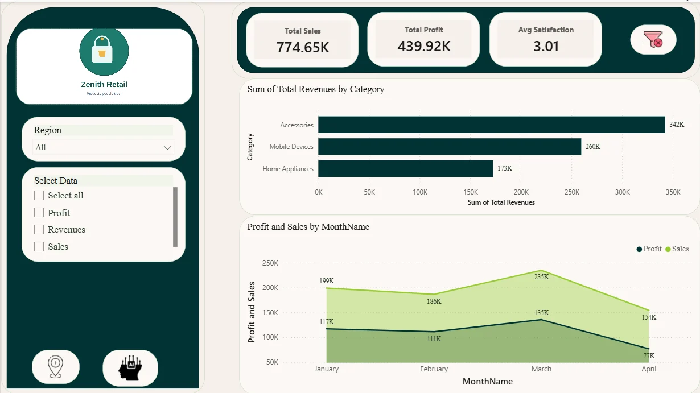

Apex Cycle Dynamics
End-to-end sales and operations dashboard on AdventureWorks data: Power Query cleaning, a star-schema model, DAX KPIs and 8 interactive report pages.
Data Analyst and Administrative Coordinator based in Riyadh, with 5+ years of experience in school administration, documentation, data entry, and IT support.
I am a results-oriented Data Analyst who turns complex, unstructured data into clear, actionable business insights using Power BI, DAX, Power Query, SQL Server, and Excel.
I'm Muaz Faroug, a Data Analyst based in Riyadh and a member of the analyst community on Miras, the non-profit platform of the Arab Data Community that connects organizations in need of data analysis with licensed analysts. I enjoy turning raw data into clear, actionable insights by building dashboards, modeling data, and supporting better decision-making across sales, HR, salaries, and customer behavior. I completed the Data Analysis Path at Satr | Tuwaiq Academy and continue developing through real-world projects.
Alongside analytics, I bring 5+ years of experience as an administrative coordinator, covering school administration, documentation, data entry, and IT support. This includes managing digital and physical records, organizing Google Drive folders, preparing schedules and presentations, and supporting daily operations for staff and stakeholders. I'm proficient in Microsoft Office and Google Workspace, fluent in English, and a native Arabic speaker.
My role in the Arab Data Community is built on accuracy in preparing and modeling data, clarity in presenting findings so decision-makers can act on them, and professionalism in meeting deadlines and communicating with clients. I'm at the start of my journey on the platform and aim to grow from intermediate to advanced by delivering practical projects that create real value.
Focusing on key KPIs that drive revenue and operational efficiency.
Cleaning, transforming, and connecting multiple data streams seamlessly.
Designing clean, intuitive, and dynamic dashboards for stakeholders.
Core tech stack and analytical competencies
Interactive Dashboard Design, Data Modeling, Custom Visuals & RLS
Core ToolETL Processing, Data Cleaning, Merging & Transformation
Core ToolCalculated Columns, Time Intelligence Functions, Complex Measures
Core ToolJoins, CTEs, Window Functions, Grouping, Aggregations & Query Optimization
Core ToolProfessional presentations and reports
Pivot Tables, Advanced Formulas (XLOOKUP, INDEX/MATCH), Data Analysis
Star Schema, Snowflake Schema, Relationships & Cardinality
Design Principles, Interactive Dashboards, Executive Reports
Trend Analysis, Forecasting, Exploratory Data Analysis (EDA)
Four end-to-end Power BI case studies, from raw data to interactive dashboards
End-to-end sales and operations dashboard on AdventureWorks data: Power Query cleaning, a star-schema model, DAX KPIs and 8 interactive report pages.

Salary analytics dashboard showing how experience, education, certifications, company size and work mode affect pay, across 4 report pages.

Sales and customer-satisfaction report for Zenith Retail with AI visuals (Key Influencers, Decomposition Tree), bookmarks and field parameters.

Three years of sales ($24.01M, 25K orders, 18K customers) turned into an interactive dashboard with region slicers and a map.
Certifications, training and academic background
Satr | Tuwaiq Academy · Aug 2026
Learning path covering SQL, Python, Pandas, NumPy, Matplotlib, Seaborn and Power BI, including Power BI 103, SQL 103, Exploratory Data Analysis (EDA) and NumPy.
PowerAI Academy · Aug 2026
Foundations of data analysis with Microsoft Power BI: preparing data and building reports and dashboards.
IBM · Jun 2021
Introductory course covering the foundations of data science.
Fortinet Training Institute · Dec 2022
Completed training on information security awareness, covering topics such as phishing, social engineering, and best practices for maintaining a secure digital environment.
Mashreq University, Sudan · Nov 2017
Full-time Bachelor's degree from the Faculty of Computer Science & Information Technology, graduated with grade Good.
Let's discuss data projects, business insights, or opportunities
I am currently available for freelance projects, dashboard creation, and full-time positions.
Send Message